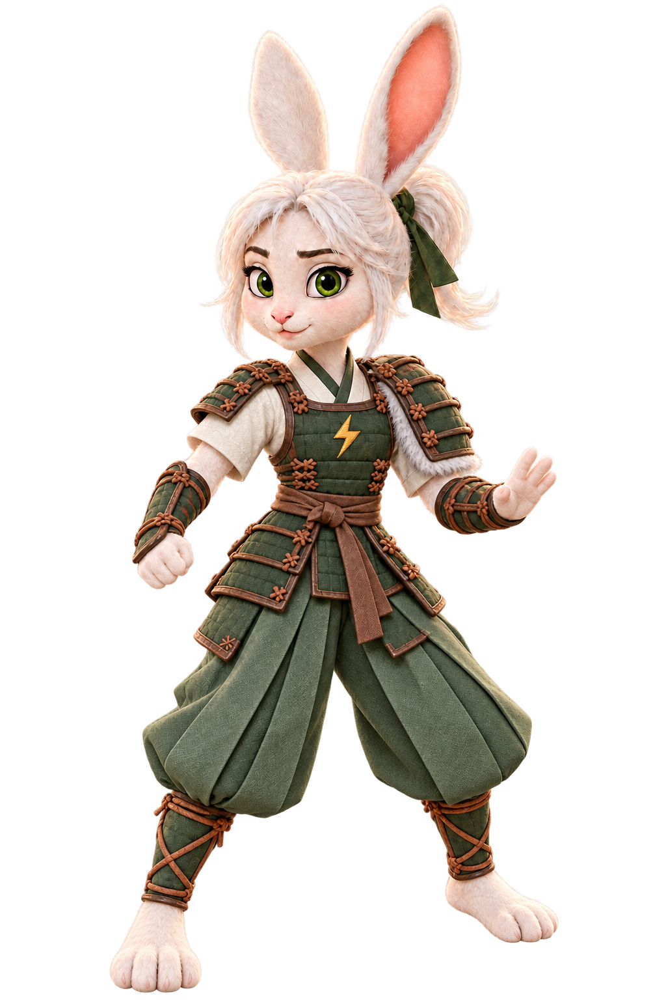
Young Samurai
Raika
A young samurai learning to balance strength, courage, and compassion.
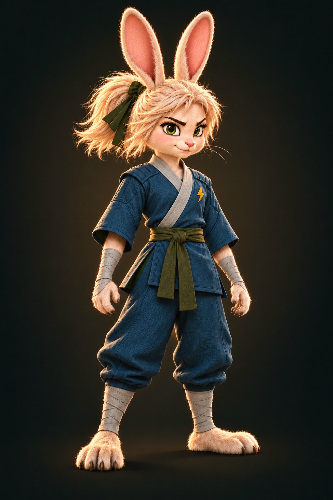
Strength to fight. Wisdom to protect. Enter a world of ancient traditions, impossible choices, and a young warrior finding her path.
Beyond the mountain paths, clans and warriors carry stories of honor, loyalty, and sacrifice. Raika's journey is only beginning.
Meet Raika: a young rabbit samurai learning that courage is more than strength.
Training, family, and ancient teachings shape the path ahead.
Discover an original fantasy universe through illustrated comic storytelling.
Family · Strength · Wisdom · Legacy

A young samurai learning to balance strength, courage, and compassion.

Raika’s father and samurai mentor. He teaches that a warrior must be strong enough to fight and wise enough to protect.
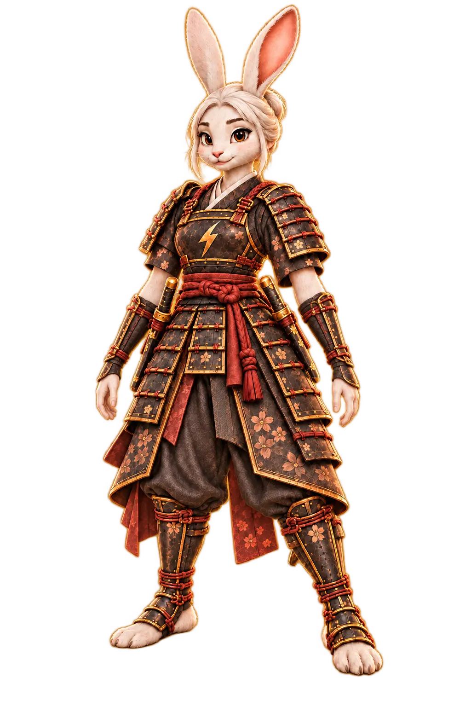
She carries the weight of two worlds — one as a commander, the other as a mother. To protect those she loves and those she leads, she has sacrificed more of herself than anyone will ever know.
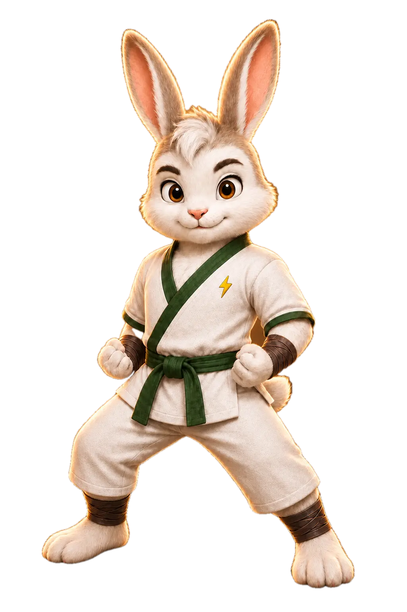
Strong-willed and determined, Raigo carries a quiet intensity. Beneath his calm presence lies a fierce spirit ready to protect those he loves.
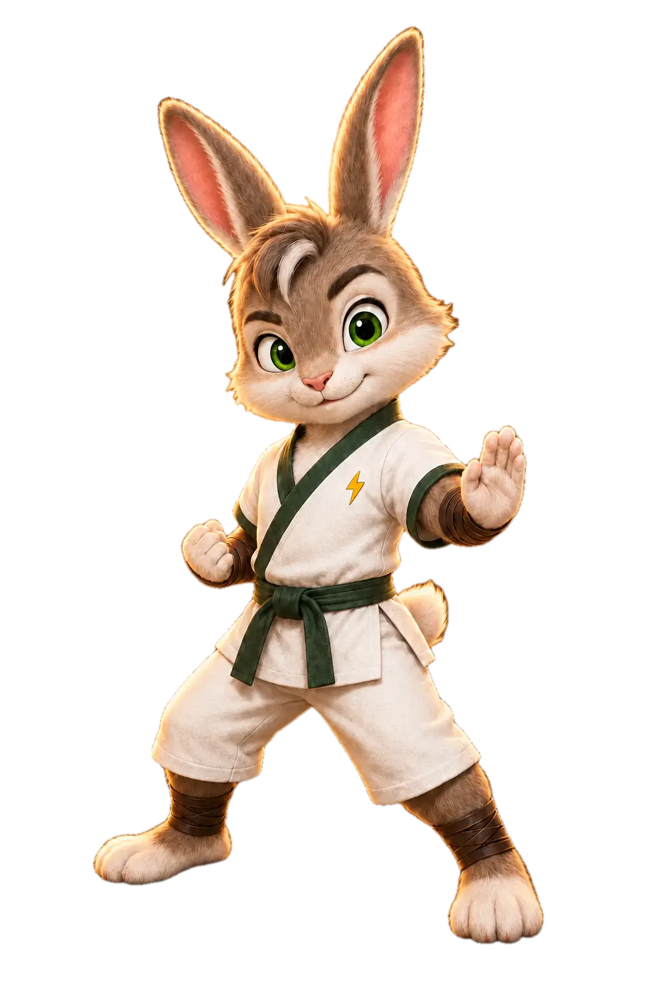
Bright, spirited, and full of heart, Raiko brings youthful energy and courage. His path is shaped by curiosity, loyalty, and the will to grow stronger.
Duty · Vigilance · Courage · Protection
Elegant, calculating and technically precise, Kanatoko uses her formidable strength only when necessary. A former student of Sensei Rai and the younger sister of Kanazuchi, she carries a double-ended tactical spear that can split in two.
Wild and unpredictable in combat, yet disciplined as a soldier, Kanazuchi is a former student of Sensei Rai and the elder brother of Kanatoko. He wields two matching battle hammers.
Nonki in his younger warrior days, wearing the black, crimson and gold armor of the Lion Kingdom and carrying his kanabo, throwing knives and chain.
Meet the artisans, neighbours and everyday figures who bring Sakura Village to life.
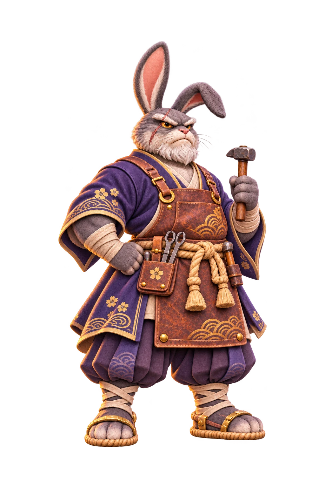
Sakura Village's gruff, fiercely dependable rabbit blacksmith. He lives for his craft, inherited his forge from his old master and surpassed his teacher in skill. Kinder to curious children than to adults, he believes a sword is a responsibility — and refuses to forge one for an unworthy hand.
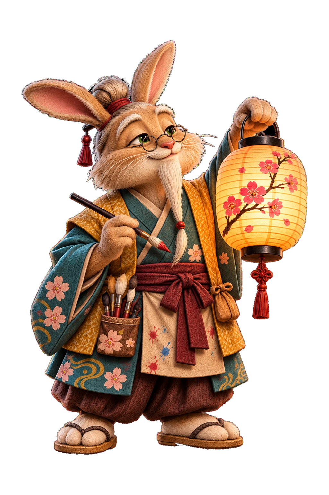
Geijutsuka is a gentle, dreamy rabbit artisan who creates and paints traditional Japanese paper lanterns. Romantic, sensitive and a little absent-minded, he sees beauty in details other villagers pass by.

Hibana is Sakura Village's irrepressible elderly rabbit fireworks seller. Childlike, thrill-seeking and always in motion, he delights in loud celebrations, bright colors and surprising everyone with his fireworks.
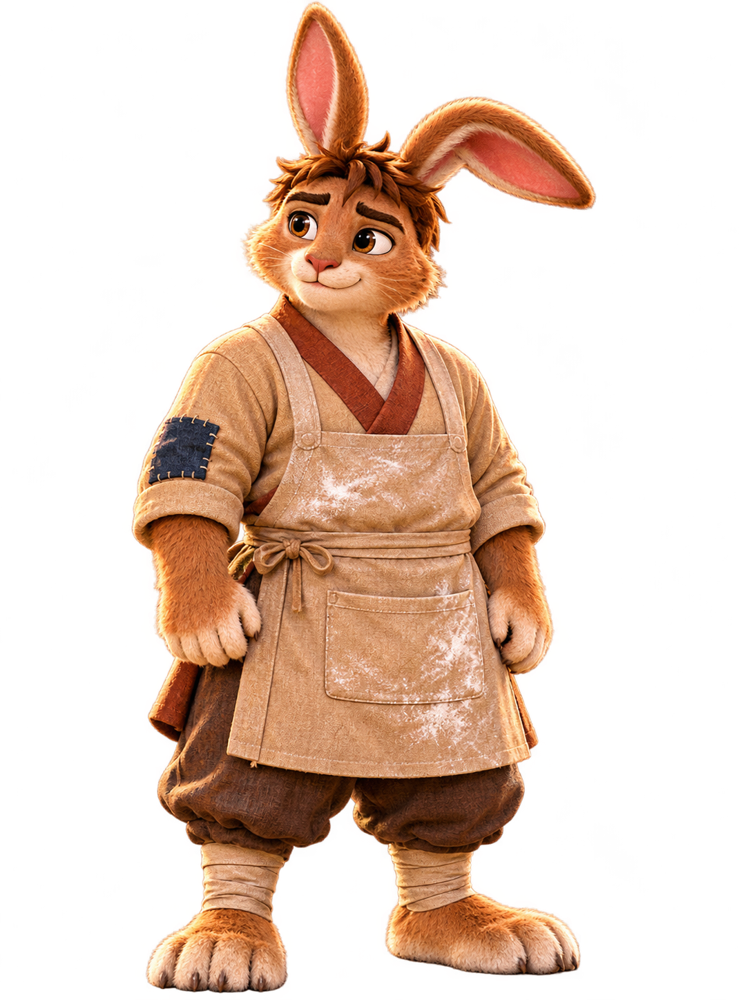
The warmhearted baker of Sakura Village. Komugi is generous, hardworking and determined to protect his neighbors, even when his training is more enthusiasm than technique.

The elder of two hamster twins by three minutes. Kisū steadfastly preserves their father's tradition: three grilled dango on the skewer, plus a fourth offered separately as a gift. He believes every profit should be accompanied by an act of giving.

The younger hamster twin by just three minutes. Gūsū keeps all four glazed dango on one bamboo skewer, convinced that generosity belongs in the serving itself. He and his traditionalist brother Kisū sell their inherited family recipe in facing shops and disagree endlessly about the fourth dumpling.

A shy young rabbit who sells flowers in Sakura Village. Her long copper-red hair, warm brown eyes, pink sakura-patterned kimono, olive-green obi, florist's apron and carefully arranged bouquet define her appearance.
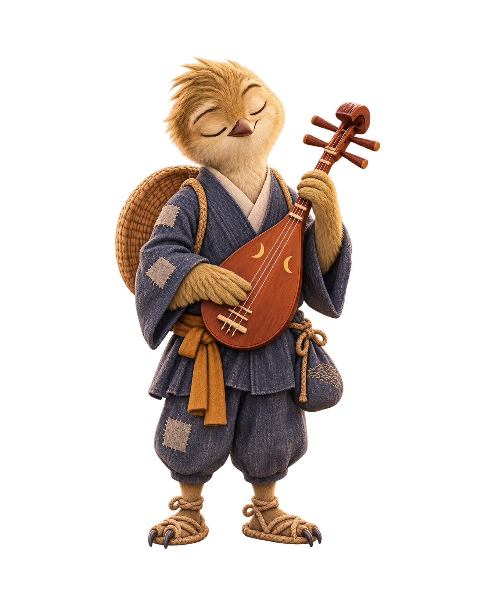
A gentle wandering musician and keeper of Sakura Village's stories. Through his songs and old legends, he carries the village's memories into the wider world; sometimes a melody takes on the weight of prophecy.
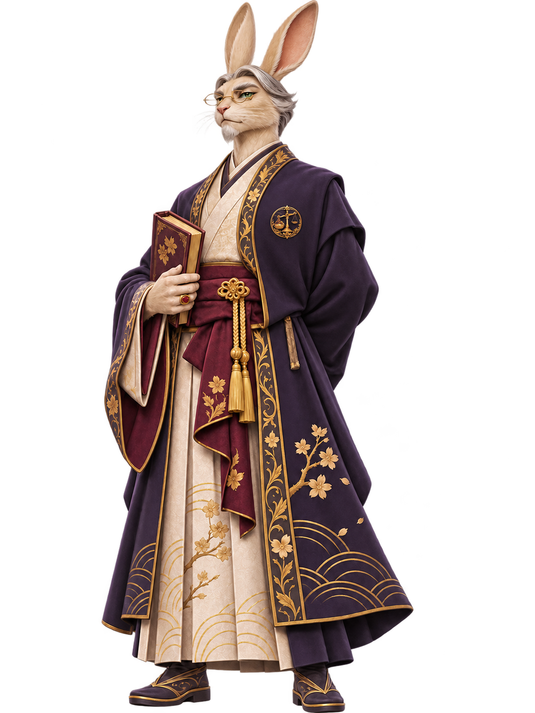
A respected, wealthy and highly educated leader who maintains his status with quiet authority. Since the death of his wife, he has buried himself in work, keeping an emotional distance from Okana, the daughter who so closely reminds him of her mother.

The exceptionally poised and sharp-witted daughter of Sakura Village's head. Raised amid luxury after her mother's death, Okana hides her loneliness behind impeccable manners, cutting remarks and a proud sense of status. Raika's close family bonds awaken her deepest envy — and an unexpected desire to grow.

Behind Nonki's carefree grin is a once-great warrior who fled the Lion Kingdom with his infant daughter SAKI. His wife was left behind, and grief gradually turned his sword hand toward sake. Even in his worn indigo robes and straw hat, traces of the formidable fighter he used to be remain.

A gentle-voiced storyteller and veteran of countless wars, Tokizō Okina carries the village's living memories. One ear was lost long ago, and scars remain on his strong hands. Tall, broad-shouldered and slightly stooped with age, he greets children with kindness while the quiet strength of an old warrior still shines in his eyes.
Meet Sensei Genbu Fokotsu and the students of the separate Dojo Kazan school. Each character has an independent identity and portrait archive.

The senior teacher of Dojo Kazan, a separate martial-arts school beyond Sakura Village. His discipline and mastery define the dojo's training tradition.

A strong, determined rabbit fighter with red eyes, a long black braid and healed training scars across her clenched fists. Her charcoal-and-red uniform bears the dojo's flame emblem.

The gray-furred student with dark hair, amber eyes, and basalt-colored training clothes bearing the flame badge.
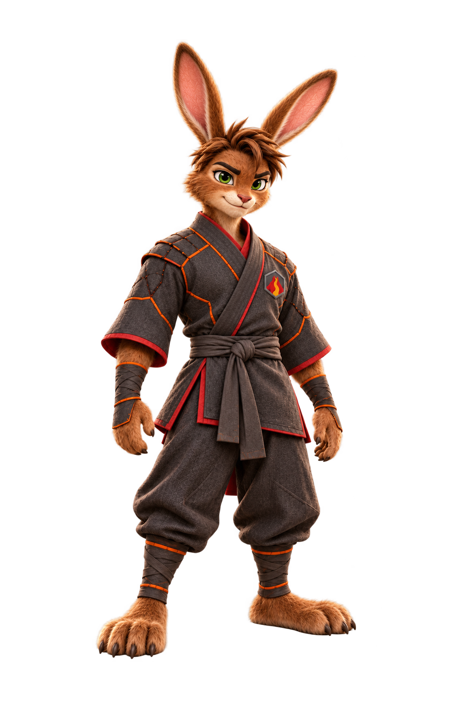
The warm brown-furred student with green eyes and a lively expression, wearing the school's dark volcanic training uniform.

A dark-clad rabbit shinobi whose face is partially concealed by a cloth mask, with tall hooded ears and wrapped training clothes.
Discover more figures from the world of RAIKA.
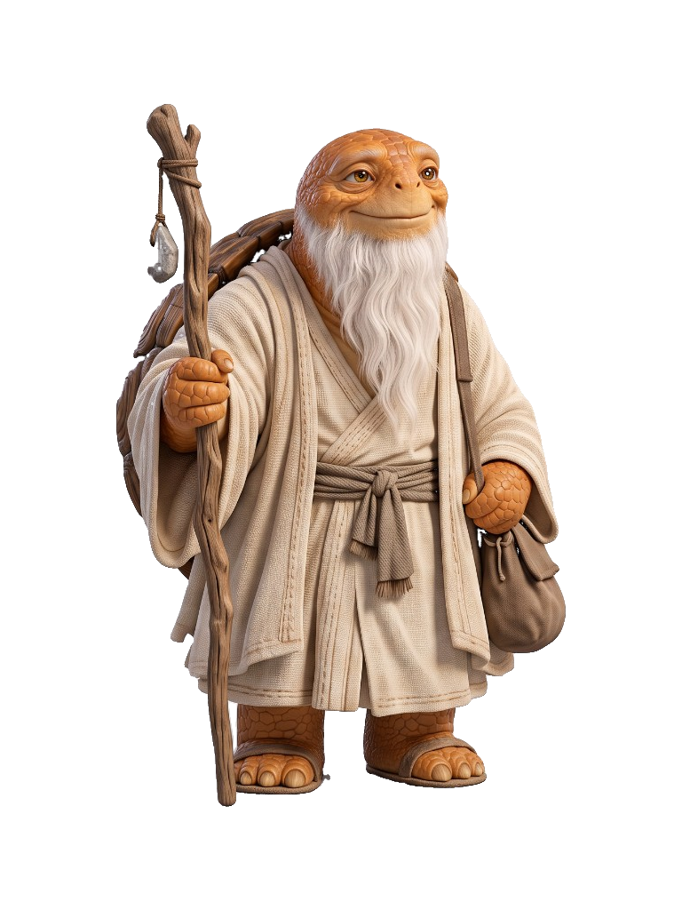
An elderly turtle sage who has waited on the northern mountain for a prophecy to awaken. As Dokoran grows stronger, Medoshi returns to Rai with news that will set Raika's journey in motion.

An elder martial arts master whose calm discipline conceals the power of lightning. Father of Kaminari, grandfather of Rai, and great-grandfather of Raika.

A silent, calculating raven shinobi. His own feathers turn into razor-sharp steel weapons and protective wing armor; he can numb a foe with a precise touch and disappear into dark smoke.
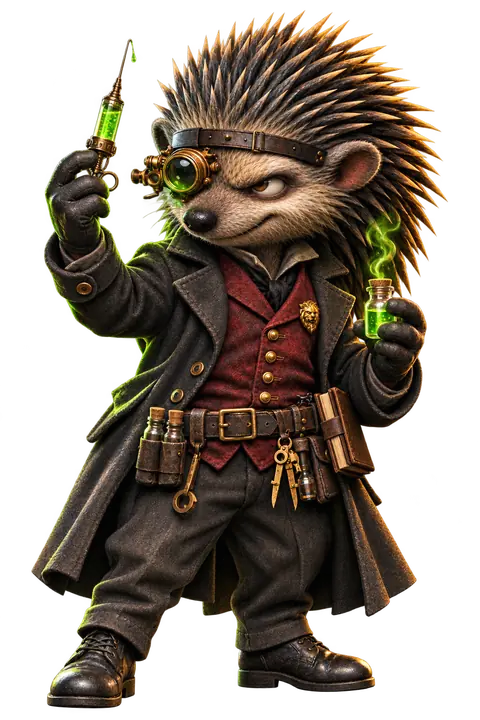
A calculating hedgehog investigator who studies alchemical mixtures, records his findings and relies on his spiked defenses in danger.
Read RAIKA — The Legacy of Reishin right here on the website. Turn through all six pages, jump to any page, and use the viewer controls to zoom or expand your reading space. No payment required.

Follow the official RAIKA page on Ko-fi to get updates when new public posts and chapters are shared. Following is free, and your notification preferences stay under your control on Ko-fi.
RAIKA is an independent creative project. Your support helps bring new comic chapters, illustrations, and stories to life.
Support on Ko-fi ↗